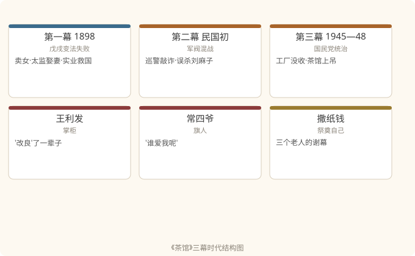

茶馆
一、基本信息
| 作者 | 老舍 |
|---|---|
| 成书/出版 | 1957年发表（维基条目：First published in 1957） Lao She — Wikipedia (EN)（百科全书） |
| 国别/地区 | 中国 |
| 时代 | 现当代 · 当代 |
| 体裁 | 话剧（三幕剧） |
| 语言 | 汉语（京味白话） |

二、创作背景
结构创意（维基条目）：'a play in three acts, set in a teahouse called Yu Tai in Beijing from 1898 until the eve of the 1949 revolution'（三幕剧，以北京裕泰茶馆为舞台，从1898年写到1949年前夜）——'以茶馆见三时代'的'人像展览式'结构（通说）。
时代三幕：第一幕戊戌变法失败（1898）、第二幕军阀混战（民国初年）、第三幕抗战胜利后国民党统治（1945—48）——'葬送三个时代'的主题（曹禺评价，通说待核）。
1950s语境：老舍自美国归国后的'新政权写作'——《龙须沟》（1951）获'人民艺术家'称号（维基条目未详，《老舍条目》通说待核）后的巅峰之作。
首演：1958年北京人民艺术剧院首演（焦菊隐、夏淳导演，通说待核）——'北京人艺'的看家戏与海外巡演名片（通说待核）。
三、内容脉络
第一幕（1898年，戊戌变法失败后）：裕泰茶馆生意兴隆——常四爷'我是旗人，我爱大清国'的直言、秦仲义办实业救国的宏论、刘麻子卖人口、康六卖女、太监娶妻——'改良改良，越改越凉'（原文意，待核）。
第二幕（民国初年）：茶馆改'公寓'仍难维生——巡警敲诈、大兵抢钱、刘麻子被当'黄霸天'砍头（误杀）、常四爷自食其力搞义卖——'我爱咱们的国呀，可是谁爱我呢？'（原文，公有领域）。
第三幕（1945—48）：茶馆破败，'莫谈国事'的纸条更大更多——秦仲义的工厂被'接收'没收、常四爷提着花生米来、王利发上吊——三个老人撒纸钱'祭奠自己'（原文意，待核）：'我可没做过缺德的事、伤天害理的事，为什么就不叫我活着呢？'（原文意，待核）。
四、主要人物表
| 人物 | 身份 | 说明 |
|---|---|---|
| 王利发 | 茶馆掌柜 | '改良'一辈子逆来顺受仍被时代吞没——'圆滑'的悲剧 |
| 常四爷 | 旗人·义卖者 | '我爱咱们的国，可是谁爱我呢'——正直者的下场 |
| 秦仲义 | 实业家 | 四十年实业救国一夜被'没收'——民族资本的挽歌 |
| 松二爷 | 旗人鸟友 | '我饿着，也不能叫鸟儿饿着'（原文意，待核）——旗人文化之殇 |
| 刘麻子、唐铁嘴、宋恩子、吴祥子 | 人口贩子·算命的·特务 | '子承父业'的两代恶人——恶的遗传（通说） |
| 康顺子 | 被卖入宫的女子 | 三幕贯穿的女性命运线（通说） |
五、主题与艺术特点
- '葬送三个时代'：戊戌变法—军阀混战—国民党统治——老舍以茶馆'埋葬'旧中国（曹禺评价'一句台词勾勒一个时代'类——通说待核）。
- '人像展览式'结构：70余人物（通说数字待核）次第登场——无主角而人人有戏（通说）。
- 小人物的尊严与无奈：'莫谈国事'纸条越来越大——沉默即生存策略（通说）。
- 京味语言的典范：儿化、歇后语、行话的文学化（通说）。
- 艺术特点：以茶馆空间'浓缩'时代、三幕同景异世、悲喜交融的'含泪的笑'。
六、影响与评论
- 维基条目：茶馆'has been translated into many different languages'（已被译成多种不同语言）——三幕剧，裕泰茶馆，1898—1949。
Lao She — Wikipedia (EN)（百科全书） - 维基条目：Rickshaw Boy 与 Teahouse 为老舍'Notable works'——国际声誉双柱。
Lao She — Wikipedia (EN)（百科全书） - 演出史：1958年人艺首演与1999年林兆华版（通说待核）；1980年赴欧洲演出被称为'东方舞台上的奇迹'（通说待核）。
Lao She — Wikipedia (EN)（百科全书） - 1982年电影版（谢添导演——通说待核）与多次重排。
Lao She — Wikipedia (EN)（百科全书）
七、阅读建议
- 70余人物、三幕五十年——按'掌柜+三老人+两代恶人'的主轴读。
- 清末民初北京旗人文化与制度（太监、旗饷）需要注释。
- '茶馆即中国'的象征读法——每件道具（'莫谈国事'纸条）都是主题。
- 《老舍全集》（人民文学出版社）含《茶馆》：标准。
- 《茶馆》单行本（人民文学出版社）：通行。
- 英译：Teahouse（John Howard-Gibbon 译，1980，维基条目：Teahouse: A Play in Three Acts Translated by John Howard-Gibbon）——通说待核。
通读三幕（2小时）→ 精读第一幕（人物群像）与第三幕（撒纸钱）→ 看人艺演出录像（于是之版）→ 讨论王利发是否'悲剧人物'。
八、待核实
- 1957年《收获》创刊号发表（通说待核）与1958年首演细节待核。
- 70余人物的统计口径待核。
- 1980年欧洲巡演'东方舞台上的奇迹'的报道出处待核。
- John Howard-Gibbon 英译（1980外文出版社，维基条目引）待核。
本页主要来源
老舍的其他收录作品：骆驼祥子